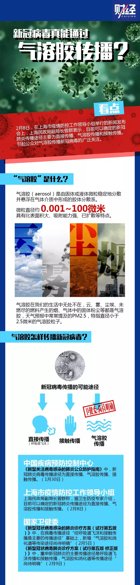
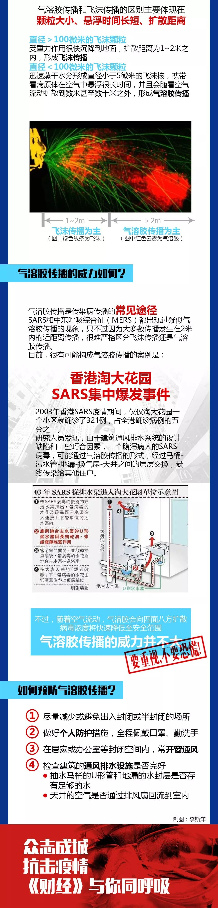

气溶胶传播新冠病毒？要重视，但不必恐慌
原文链接 备份链接 2月8日，上海市疫情防控工作领导小组举行的新闻发布会上，上海民政局副局长曾群表示，目前可以确定的新冠肺炎传播途径主要为直接传播、气溶胶传播和接触传播。 “气溶胶传播”被明确为新冠肺炎传播途径之一，引发了热议。就在3天 …

_
气溶胶、消化道是否为传播途径在新冠肺炎疫情中牵动人心，在等待医学界给出明确答案时，必要的防护仍是关键，但防护过度则大可不必
_
文 |《财经》记者 信娜 孙爱民 实习记者 朱贺
**图 | 李斯洋
**
编辑 | 王小 马克
新冠肺炎病毒可通过“气溶胶”传播。2020年2月8日，上海市民政局副局长曾群在上海市疫情防控工作领导小组新闻发布会上释放的这一信息，令不少民众一度陷入恐慌，着急封堵家里下水道并封闭门窗，据称这样可以减少气溶胶传播病毒风险。
但在2月9日的国务院联防联控机制新闻发布会上，中国疾控中心传染病预防控制处研究员冯录召回应：目前，没有证据显示新冠病毒可通过气溶胶传播。
这之前，新冠病毒已确定的传播途径，主要是呼吸道飞沫和接触传播。前者指病毒可随着人咳嗽、打喷嚏时呼出的飞沫转移；后者发生的条件是，接触到携带新冠病毒的物体，比如门把手等。戴口罩、勤洗手、勤消毒可阻截这两种传播途径。
相比两者，气溶胶在传播时间和距离上都是胜者。气溶胶，是悬浮在大气中的微小颗粒。我们熟知的霾就算是一种气溶胶。气溶胶颗粒越小，在空中悬浮时间越久，借着风力也走得更远，这意味着病毒挟气溶胶之力会更持久，能传播的更远。
不过，对于新冠病毒是否可通过气溶胶传播在学界仍存争议。“由上海市民政部门来发布这么重要的判断，不太严谨。”一名公共卫生领域专家告诉《财经》记者，这关乎全社会防疫措施与民众的心理，需要严格的科学验证，新冠病毒的飞沫传播与直接接触传播，都是在临床上得到验证的，气溶胶传播的效应需要更多的研究结果后才应对公众发布，而且应由国家级的机构发布。
2月9日，国家卫健委发布《新型冠状病毒感染的肺炎诊疗方案》（试行第五版 修正版），对病毒传播途径中表述为，“气溶胶和消化道等传染途径尚待明确”。
早在1月22日，国家卫健委高级别专家组成员、中国工程院院士李兰娟对《杭州日报》曾提及新冠病毒的气溶胶传播，“病毒在呼吸道繁殖，通过飞沫、气溶胶传播，我们现在还在进行血液、粪便等传播途径的研究”。当时的判断依据是什么？目前是否有相关的研究进展？李兰娟婉拒了《财经》记者的采访。
在封闭、半封闭空间应谨慎
人们的担心不无道理，如果新冠病毒果真能通过气溶胶传播，阻截起来只会更难。北京大学环境科学与工程学院教授要茂盛告诉《财经》记者，“应警惕封闭与半封闭空间中气溶胶传播的作用。”
气溶胶的来源颇广，呼吸、咳嗽、吐痰、呕吐、大小便（水冲洗）等，均可产生。当气溶胶中含有细菌等单细胞生物，便可为病毒提供可以吸附、存活的宿主，这样病毒的存活时间就延长了。
如果处于狭小封闭与半封闭的空间里，气溶胶传播会和飞沫传播一样作用。要茂盛分析，假设在一个狭小的被感染的病房里，如果有健康人进来，即使戴着口罩，也可能被感染，因为口罩不能完全封闭，病毒气溶胶颗粒有可能通过口罩和鼻梁的缝隙进入人体。
有人因为确信“新冠肺炎病毒可通过气溶胶传播”，而在网上提出封闭门窗、封闭楼道、封闭下水道的建议。要茂盛称，此举 “并无必要“，大部分人开窗透气没有感染的风险。
戴口罩主要为防止病毒通过飞沫传播。麻省理工学院（MIT）的Lydia Bourouiba 教授曾抓拍了人打喷嚏后的液滴轨迹，上百微米的大液滴，惯性强，射程虽有两米，但会快速沉降。几微米的小液滴飞沫，在空气中可瞬间蒸发为微米级颗粒，即飞沫核。
这种飞沫核中可携带病毒蛋白质或其他病原体，以气溶胶形式停留在空气中并传播。如果新冠病毒可以此方式传播，含有新冠病毒的飞沫核，便可具更广泛的传播力。
“在室外开放环境下，如果周边没有近距离患者飞沫，健康人感染的几率非常低，比中彩票的几率还低。”要茂盛分析，需要和患者保持的安全距离，气溶胶中病毒的传播“跟当时患者的防护、健康人的防护、病毒的种类、风向等有关系”。
抽烟的人已离开，我们却仍能闻到烟味。这是因为，烟草燃烧后形成的微小颗粒，可在空气中形成稳定存在的气溶胶，还可随着流动空气飘向他方。颗粒越小的气溶胶，静止在空气中同一高度的停留时间就越长。1微米的颗粒，在静止的空气中可悬浮1小时以上。含有新冠病毒的飞沫核尺寸在亚微米到微米的范围，按此测算，停留时间只会更长。
不过，室外环境中，患者咳嗽、说话等喷出来的病毒，很快会被大气稀释，在扩散过程中会衰减，所以浓度会变得很低，病毒活性也可能受到空气污染物的影响。
要茂盛提示，在做好防护措施的前提下，与病毒携带者保持两米之外被感染的风险会很低。
安全距离与风向也存在关联。如果前面有个人抽烟，风向正好是顺风，即使保持两米的距离，可能也会闻到烟味。所以如果处于下风向，安全距离可能要更远一点。
上述公共卫生领域专家对《财经》记者分析，关于新冠病毒的气溶胶传播途径，很多细节需要研究，“比如气溶胶中含有多少病毒可以致病，气溶胶中病毒的存活时间与载量等”，都还不能确定。
此前，学术界对于冠状病毒在气溶胶中的传播路径研究很少。 英国莱斯特大学的学者于2019年1月《BMC传染病》杂志上一篇综述性论文提及，在空气取样的研究中，的确发现过SARS冠状病毒的核酸，但研究人员并未通过病毒培养来研究其活性。这意味着，由此来的病毒是否具有传染性并不明确。
还有一些研究揭示，与新冠肺炎病毒同属一家的SARS冠状病毒和中东呼吸综合症冠状病毒，空气传播在其传播路径中的比例仍存争议。
不过，气溶胶传播对于新型冠状病毒的传播判断，并非毫无根据。
2004年，军事医学科学院微生物流行病研究所等机构的研究者，在对某SARS定点收治医院病房区及阳台空气进行样本收集，研究发现，病房区SARS病毒的阳性率为29%，阳台为20%。进一步研究显示：病毒在距传染源周围1米之内的空气中具有感染活性，在此范围之内存在气溶胶传播的潜在威胁。
在该研究中，研究者在阳台中取得的样本虽然病毒阳性率达20%，但细胞分离均为阴性。研究者推测SARS病毒在空气中可以存活，但对外界的抵抗力较差。研究者在发表于《中华流行病学杂志》上的论文提示：“我们的实验数据及流行病学资料目前都不支持病原体经空气快速远程传播。”
科学家对于气溶胶中的流感病毒研究较多，可以作为参考。
一个由美国、日本、中国香港、泰国学者组成的研究组，系统研究了气溶胶传播在A型流感病毒传播中的角色，研究发现，气溶胶传播途径，大约占A型流感病毒传播的一半，这也意味着在室内环境下，只是减少直接接触与较大颗粒的飞沫核传播，是不足以控制A型流感病毒的传播的。
2013年发表于Nature Communications上的一篇论文显示：此前有学者假设气溶胶中的流感病毒在高湿度环境中会受到抑制，但香港与曼谷的研究模型证实，香港与曼谷的室内气溶胶是流感病毒传播的主要途径。
同时，上述研究者通过试验研究发现，在小颗粒气溶胶中的存在流感病毒，仍然具有传染性。医院急诊室的空气中可以检测到流感病毒核酸。
这一研究佐证了要茂盛的提示，在封闭和半封闭空间应该更谨慎。
2020年2月8日，国家医疗专家组成员、北京地坛医院感染性疾病诊疗与研究中心首席专家李兴旺在国务院新闻发布会上解释称，气溶胶的传播在呼吸道传染病中是可以看到的，但是对于新冠病毒有没有气溶胶传播的情况，目前还不明确。“我们关注到这个现象，但要做更多研究工作，今后有证据时可能会更改传播途径的写法。”
同日，中国疾控中心传染病预防控制处研究员冯录召在国家卫健委“全力做好新型冠状病毒肺炎疫情防控工作”专题页面中这样回复：新冠肺炎目前还是主要通过飞沫传播和接触传播的疾病；在某些特殊的条件下才可能发生气溶胶传播，例如进行临床气管插管等专业医疗操作时。

完整看待17年前香港淘大花园感染事件
与气溶胶传播一样有争议的还有“粪-口传播”。在《新型冠状病毒感染的肺炎诊疗方案》（试行第五版）中，消化道传染途径也是尚待明确。
通过消化道途径传播，常见疾病有甲肝、戊肝等，以及一些寄生虫疾病，其病原体存活于粪便中，如果污染了手或者食物，会病从口入。
虽无定论，但排泄活动中产生的气溶胶仍需警惕。17年前香港淘大花园社区的病毒传播案例就很典型。
2003年非典期间，香港淘大花园社区发生了一起“粪-口传播”案例。一个 SARS 患者上厕所，经污水系统间接引发了超过 300 例感染。最终，香港淘大花园E座中，321人感染了SARS病毒，其中42人死亡，气溶胶被认为是此次集体传染的最大祸首。
不过，时过多年，至今这起事件的传播途径仍未完全统一。中国香港特区政府的调查结果显示，E座的一名SARS患者感染了部分居民，然后通过污水处理系统、人与人传播、电梯和楼梯等公共设施，传播至该座其他居民。E座的居民进而通过人与人接触和飞沫传播，将病毒传给其他居民楼。
而世界卫生组织（WHO）的调查则显示,该社区居民楼里的垂直污水管道，与马桶、水池、浴缸和浴室地漏等设施进行连接的U 形水槽，由于长期处于无水状态，为病毒传播创造了便利。同时，浴室门后的排气扇，将含有病毒的气溶胶从污水管道吹进浴室、污染了浴室，然后被吹通风井中，实现楼层之间传播。然而，WHO未能解释从E座到其他居民口的病毒传播路径。
《新英格兰医学》期刊2004年4月发表的一篇论文，研究了香港淘大花园社区的病毒传播路径。研究者同意WHO的部分假设，认为含有病毒的气溶胶在不同楼层之间进行传播，并认为气溶胶通过通风井上升到E座顶部后，通过东北风传播到B、C、D座。不过，在气溶胶产生源头方面，与WHO意见不一——研究者通过在港大的实验发现，气溶胶产生于抽水马桶运作时垂直污水管道发生的液压。
此前，李兰娟曾表示，新冠病毒有没有通过血液传播、粪便传播、污染物品的传播，还需要进一步证实。
2020年2月1日，深圳第三人民医院在某些新冠肺炎患者的粪便中检测出新冠病毒RNA阳性，这说明新型冠状病毒很可能通过粪口传播。
不仅中国，美国在其第一例新型冠状病毒患者的排泄物中，同样发现病毒核酸检测结果显示阳性。
钟南山也曾透过媒体提醒，虽然现在新冠肺炎主要还是通过飞沫传染，但要注意粪便传染的可能性。
确实，现有的研究还无法推测排泄物中是否含有的是具有传染性的新冠病毒，因为粪便中失活病毒，也能在核酸检测中显示阳性结果。如果能在大便中分离到完整的病毒，并且培养成功，才可以100%的确定，粪便中是否具有传染性的病毒。
虽然对这一传播途径尚存疑，冯录召认为，这些现象提示我们要勤洗手，尤其是接触了容易污染的物体表面、饭前、便后等。

▲点击图片查看更多疫情报道
责编 | 黄端 duanhuang@caijing.com.cn
本文为《财经》杂志原创文章，未经授权不得转载或建立镜像。如需转载，请在文末留言申请并获取授权。
原文链接 备份链接 2月8日，上海市疫情防控工作领导小组举行的新闻发布会上，上海民政局副局长曾群表示，目前可以确定的新冠肺炎传播途径主要为直接传播、气溶胶传播和接触传播。 “气溶胶传播”被明确为新冠肺炎传播途径之一，引发了热议。就在3天 …
原文链接 备份链接 【财新网】（记者 杨睿 冯禹丁 赵今朝）“阴谋论者不相信科学。我希望国家专业部门来调查，给我们一个清白。”中国科学院武汉病毒研究所研究员石正丽2月4日回复财新记者称，“我自己的话没有说服力，我不能控制别人的思想和言 …
原文链接 备份链接 “从严格意义上说，病毒不能算是活着。病毒非生非死，存在于生命与非生命的边界之上。若是处于细胞外，病毒只是存在而已，什么也不会发生。一旦病毒进入细胞，就变成了‘特洛伊木马’。病毒在繁殖时看起来是活着的，但从另外一个角度 …
原文链接 备份链接 刘为勇是我的大学同学。如今他是华中科技大学同济医学院附属同济医院检验科一员，发生疫情以来，他一直在抗击新冠病毒的第一线。 他是新冠病毒的最早鉴定者之一。在 1 月 4 日，他就在大学群里提醒大家不要去菜市场买野味，因为 …
原文链接 备份链接 瑞德西韦已在我国进入临床测试阶段，《潜望》从接近该临床试验人员处获悉，瑞德西韦试验的第一例患者从重症到恢复，用时不到24小时，“效果很好”。 《潜望》 作者 纪振宇 刘鹏 一起基于“同情用药”准则下的治愈案例，让美国制 …